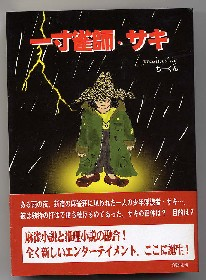

というタイトルの文庫本を買った（4-88392-315-0彩図社\740-）。

文庫本とはいえ、厚さ２センチもある本格的な長編小説。これほどの長さの麻雀小説といえば、阿佐田哲也の麻雀放浪記以来。（おお、これは読み応えがありそうな）と、多忙な合間を縫って読み始めた。
ストーリーは、施設で育った天才少年が、自分を捨てたイカサマ麻雀打ちの父親に復讐するため、新宿の雀荘を打ちながら探し歩くというもの。
麻雀放浪記以来の長編小説と期待していたが、ちと期待はずれだった。というより、麻雀放浪記なみの面白さを期待するのが間違っていたかも...(-_-；
それでもストーリーの脇をかためる捨て牌のアイデアは面白かった。主人公である一寸雀師・サキの捨て牌。
   
  
    
 
  
何のことだか分からないだろうけど、これは上から順に「よろしく」、「ごくろうさん」、「なにしにきた」「ころしにきた」、「いいよ、よろしくな」と解読する。(笑)
そんな風に捨てながら、アガるのは、根こそぎフランケンも真っ青の超大物手ばかり。一言で言えば、必要牌を自由自在にツモるオカルト麻雀ストーリー。
著者は「ちーくん」という、いささか風変わりなペンネームの人。なんでも本職は特許管理士で、自分の仕事による収入よりも自分が特許を取って、そのパテント料で大もうけすることをもくろんでいるとか。
|